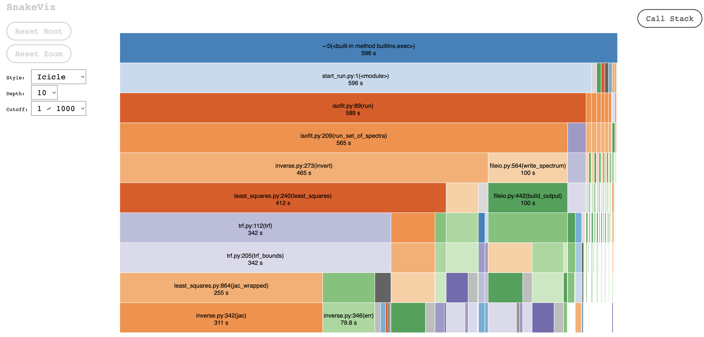
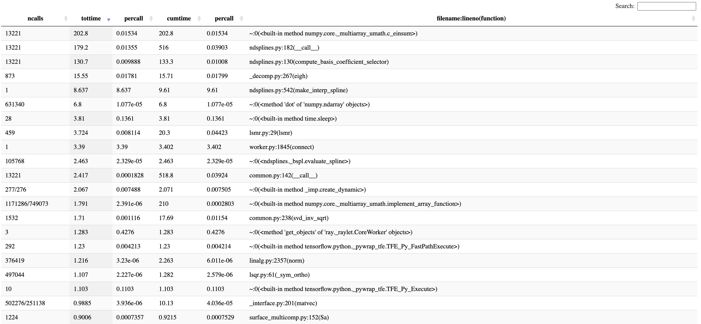
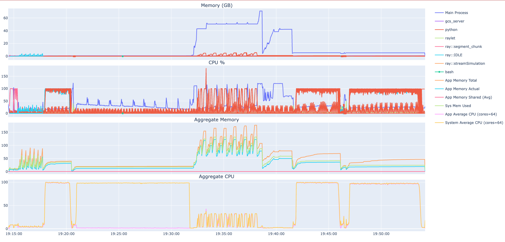

Testing#
There are two types of testing for ISOFIT: pytests and examples. Generally, the pytests target specific functions to validate their outputs or seek coverage by hitting as many lines of the codebase as possible. The examples are reserved for real-world test cases and serve as greater examples of how to execute ISOFIT.
The pytest cases must be passed before any code revisions are accepted. Examples are recommended to run through as well but are not directly checked for.
Pytests#
To start, ensure pytest is installed via one of the following methods within the repository root:
| Method | Command |
|---|---|
| pip | pip install -e ".[test]" |
| uv | uv sync --optional test |
There are three subtypes of pytests:
| Subtype | Time | Description |
|---|---|---|
| unmarked | Short | All of the generic test cases of small size |
| examples | Medium | Runs through a few of the examples |
| slow | Long | Full apply_oe tests |
It is strongly recommended to execute each subtype separately. This can be done via the -m/--marker flag, for example:
$ pytest -m unmarked
$ pytest -m examples
$ pytest -m slow
You may see an x for some test cases. These are expected failures and are considered as a pass
Examples#
The ISOFIT tutorials contains more test cases and notebooks not captured by the pytests. Although these are not checked before pull requests are accepted, they will eventually be noticed as every version update to the tutorials repository will trigger a reprocess of the notebooks. It may be useful to lean on these to further validate any changes.
More information may be found in the notebooks section.
Profiling#
ISOFIT presently supports two types of profiling: cProfile and resources.
cProfile is a Python module that profiles each individual function call. The output is a data file that can be visualized using tools like Snakeviz.
Resources is an in-house system resources tracker for ISOFIT that is multiprocessing-friendly. Every polling interval will append the system's present CPU and memory resources in use by ISOFIT in an easily parseable JSON list file. This can be visualized using the isoplots package.
cProfile#
How to Use#
ISOFIT implements an easy-to-use --profile option on apply_oe:
$ isofit apply_oe ... --profile profile.dat
Which can then be visualized:
$ snakeviz profile.dat
cProfile does not capture Ray processes well. ISOFIT has a ray wrapper to circumvent it and force the entire system into serial by setting the environment variable
ISOFIT_DEBUG=1.
Outputs and Analysis#
Once a profiling data file is produced, there are a variety of ways to explore the results.

The above image uses Snakeviz to visualize the profiler results. This is the icicle view which shows the root at the top and all calls made by that function below it.
Clicking on a block will set that block as the root. This allows you to explore what functions and modules are calling others.
The time shown on each block is the cumulative time spent in that function. Children functions may have greater cumulative times than the parent, but that is because those functions were called elsewhere during the run.

The lower half of the visualizer includes the result values. There are six columns:
| Column | Description |
|---|---|
| ncalls | The number of calls to this function |
| tottime | The total time spent in the given function (and excluding time made in calls to sub-functions) |
| percall | The quotient of tottime divided by ncalls |
| cumtime | The cumulative time spent in this and all subfunctions (from invocation till exit). This figure is accurate even for recursive functions. |
| percall | The quotient of cumtime divided by primitive calls |
| filename:lineno(function) | Provides the respective data of each function |
Depending on what information you are seeking, these columns may be sorted high/low. This example uses the high sort of tottime to analyze what functions take the most total time over the run.
Further Reading#
Read the Docs: https://docs.python.org/3/library/profile.html In-depth guide: https://www.machinelearningplus.com/python/cprofile-how-to-profile-your-python-code/
Resources#
Similarly to cProfile, resources may be enabled via the --resources on apply_oe:
$ isofit apply_oe ... --log_file logs.txt --resources
The output file is automatically set as the same directory as the log file, so that is required to be enabled as well.
Visualizing#

Isoplots can be installed via isofit download plots and once a resources.jsonl file is acquired, can be visualized via:
$ isofit plot resources resources.jsonl -o resources.html
A lot of options are available to further configure the output plots:
$ isofit plot resources --help
The output is an html file that can be viewed within the browser. The plots are interactive with features such as zooming in toggling legend elements.